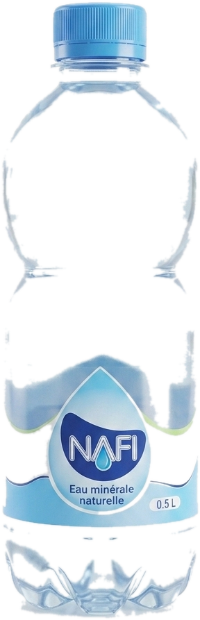
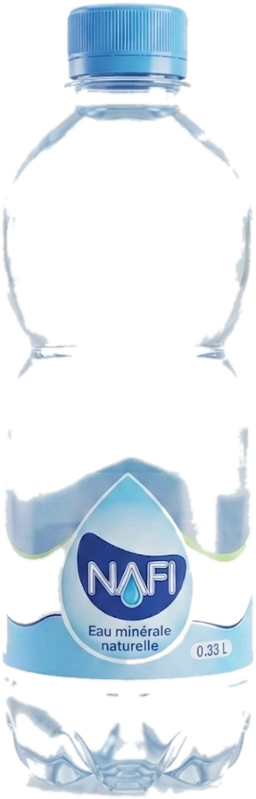

Une source protégée
Une eau captée à la source en Guinée, préservée de toute pollution, qui conserve sa minéralité naturelle.
NAFI, eau minérale naturelle très faiblement minéralisée, captée, purifiée et embouteillée avec soin — disponible dans tout Conakry.

Tout commence par une conviction simple : chaque famille guinéenne mérite une eau d'une pureté irréprochable, accessible et fiable. C'est ainsi qu'est née NAFI — une eau minérale naturelle, captée au cœur de la Guinée et embouteillée à Conakry.
De la source à votre verre, nous veillons sur chaque goutte. Purification rigoureuse, contrôles permanents, hygiène stricte : NAFI, c'est la promesse d'une eau saine, légère et sûre, jour après jour.
Rendre une eau pure et de qualité accessible à tous les Guinéens, au quotidien.
Devenir une référence de l'eau minérale en Afrique de l'Ouest, fière de ses origines.
De la source à votre table, chaque goutte est protégée, purifiée et contrôlée pour vous offrir une eau d'une pureté irréprochable.
Une eau captée à la source en Guinée, préservée de toute pollution, qui conserve sa minéralité naturelle.
Un processus de purification rigoureux et des contrôles qualité à chaque étape de la production.
NAFI respecte les normes et agréments sanitaires guinéens. La confiance, c'est notre priorité numéro un.
Produite et distribuée à Conakry. NAFI, c'est une fierté nationale au service de votre quotidien.
NAFI, c'est l'eau pure, légère et saine qui vous reconnecte à la nature. Très faiblement minéralisée (résidu sec de seulement 16,40 mg/L), elle hydrate en douceur et accompagne chaque moment de votre journée.
Très faiblement minéralisée, NAFI désaltère sans alourdir. On peut en boire tout au long de la journée, sans modération.
Avec seulement 0,01 mg/L de sodium, NAFI convient parfaitement aux régimes pauvres en sel et à toute la famille.
Un pH de 7,20, quasi neutre : une eau douce et équilibrée, agréable à boire et respectueuse de votre organisme.
Adultes, enfants, sportifs : une eau idéale pour l'hydratation quotidienne, la préparation des repas, du thé ou du café.
Faible en nitrates (4,84 mg/L) et conforme à l'analyse officielle, NAFI offre une qualité fiable à chaque gorgée.
Née au cœur de la Guinée, NAFI vous apporte l'énergie d'une eau pure et naturelle, pour vous reconnecter à la nature.
Trois formats, vendus en packs pratiques — pour la maison comme pour les pros.

Enfants, événements, restaurants
Pack de 12 bouteilles
Déplacements, bureaux, événements
Pack de 12 bouteilles

Maison, repas en famille
Pack de 6 bouteilles
Commerces & grossistes
Packs & palettes sur commande
Demander un devisAnalyse physico-chimique de l'eau minérale naturelle NAFI. Avec un résidu sec de seulement 16,40 mg/L, NAFI est une eau très faiblement minéralisée — pure, légère et idéale pour toute la famille, au quotidien.
| Analyse | Valeur (mg/L) |
|---|---|
| Calcium (Ca²⁺) | 0,18 |
| Magnésium (Mg²⁺) | 0,08 |
| Sodium (Na⁺) | 0,01 |
| Potassium (K⁺) | 0,1 |
| Silice | 3 |
| Bicarbonates (HCO₃⁻) | 40 |
| Sulfates (SO₄²⁻) | < 2 |
| Chlorures (Cl⁻) | < 0,1 |
| Nitrates (NO₃⁻) | 4,84 |
| Fluor (F⁻) | 0,20 |
| Extrait sec à 180 °C | 16,40 |
| pH | 7,20 |
Valeurs issues de l'analyse officielle figurant sur l'étiquette NAFI.
Six étapes maîtrisées, contrôlées en continu, pour garantir une eau pure et sûre à chaque bouteille.
L'eau est captée à la source, préservée de toute pollution, dans le respect de son équilibre naturel.
Une filtration fine élimine les impuretés tout en conservant la légèreté de l'eau.
Traitement par osmose inverse et stérilisation UV pour une pureté microbiologique optimale.
Des analyses en laboratoire vérifient chaque paramètre, à chaque étape de la production.
Embouteillage automatisé sous conditions d'hygiène strictes, à l'abri de toute contamination.
NAFI est livrée dans tout Conakry, jusqu'aux commerces, familles et professionnels.
La confiance se construit à chaque contrôle. Voici nos engagements de qualité.
Normes sanitaires guinéennes respectées
Contrôle laboratoire régulier
Eau potable certifiée
Hygiène stricte à chaque étape
Tout ce qu'il faut savoir sur NAFI, la livraison et la distribution.
NAFI est distribuée dans tout Conakry — boutiques, supermarchés, dépôts et marchés. Pour commander en gros ou vous faire livrer, utilisez le formulaire Devis de commande ou contactez-nous directement.
Trois formats, vendus en packs : 0,33 L (pack de 12), 0,5 L (pack de 12) et 1,5 L (pack de 6). Pour les commerces et grossistes, NAFI est aussi disponible en gros volumes (palettes sur commande).
Remplissez le formulaire Contact en choisissant « Devenir distributeur / grossiste ». Nous revenons vers vous rapidement avec les conditions.
Oui. Utilisez le formulaire Devis de commande : indiquez les formats, le nombre de packs, le lieu et la date de livraison. Nous revenons vers vous rapidement avec une proposition adaptée.
Absolument. NAFI est une eau minérale naturelle, embouteillée à la source en Guinée, avec un processus de purification rigoureux et des contrôles qualité à chaque étape de la production, dans le respect des normes et agréments sanitaires guinéens.
Nous couvrons tout Conakry. Pour une livraison en dehors de Conakry, contactez-nous : nous étudions chaque demande au cas par cas.
Pour la maison, le bureau, votre commerce ou vos événements — choisissez le format NAFI qu'il vous faut, en packs pratiques.
Écrivez-nous. Votre demande nous arrive par email, avec un numéro de suivi.
Pour entreprises, hôtels, restaurants et événements. Indiquez vos besoins, nous vous recontactons rapidement.